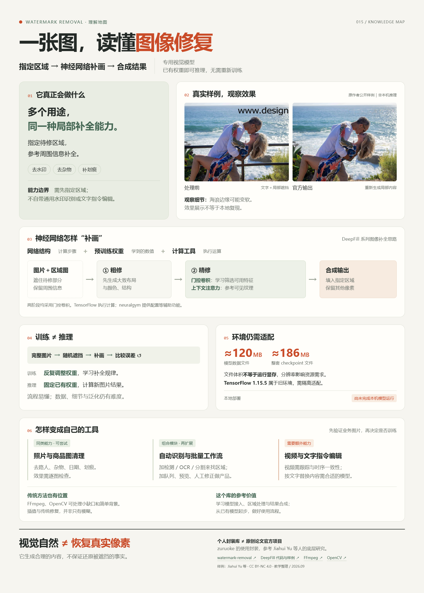
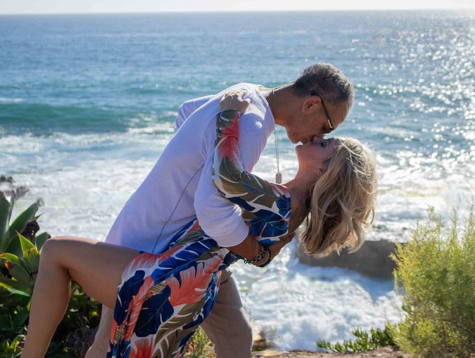

按遮罩补画图片
给它图片和待修区域，就能用预训练网络补画。水印、划痕和杂物是同一补全能力的不同用途；仓库没有任意水印自动检测器。
指定区域
→ 预测内容
→ 合成图像
给它图片和待修区域，就能用预训练网络补画。水印、划痕和杂物是同一补全能力的不同用途；仓库没有任意水印自动检测器。
两阶段神经网络先粗修结构，再参考可见纹理精修。权重另行下载，由 TensorFlow 1.15.5 执行；当前网页只展示说明与公开样例。
可先做商品图、旧照、旅行照清理与批处理；自动选区、准确排字和视频一致性需要额外模块，并用真实样本验证。

从“删掉水印”出发，区分模型本身、运行它的工具，以及需要额外搭建的产品流程。
当前状态：网页展示原作者公开效果，交互插画用于讲解；本页未加载模型、未调用推理服务。总览图整理的是我们已经核对的理解。
以下图片来自底层方法 DeepFill 原作者的公开样例 ↗，保留原始文件。它们不是 zuruoke/watermark-removal 的本地实测，也不代表自动识别水印。第一组包含文字水印清理，其余三组展示同一修复方法的物体移除能力。

原始照片官方修复结果点击图片可查看原尺寸文件。另可查看这组样例的独立遮罩 ↗。从原图到遮罩的选区准备，不等于模型具备自动检测能力。
来源：Jiahui Yu 等，generative_inpainting / examples / places2 ↗。按 CC BY-NC 4.0 用于教学研究；图片未修改。文件来源与校验记录 ↗
输入图片和指定区域，利用预训练模型补画；批处理脚本允许每张图片配一张遮罩。
适合：同样式、同位置的一批旧素材底层是通用图像修复网络，提供适当遮罩后，可以尝试移除日期、覆盖文字或小物体。
属于能力延伸，效果需用样本验证没有通用检测器，没有完整视频处理链路，也没有可直接使用的上传式网页产品。
检测、交互界面与视频一致性要另外开发仓库只附带 iStock 横图遮罩。主入口要求图片宽高比与遮罩比例相差不超过约 5%；竖图分支指向的模板未附带。水印偏移、缩放或换样式，都可能导致遮罩不再对齐。
这个模型专门做“给定区域的图像补全”。去水印、去路人、去污点，是同一种底层能力在不同场景中的应用。
规定数据经过哪些运算、怎样连接。例如先提取轮廓，再参考纹理。
像一份计算流程图训练反复调整的一组数值，决定每一步计算如何影响结果。
不是保存一整套原始照片把新图片送入网络，按固定权重进行运算，预测缺失的内容。
再配合图片处理程序，才能成为工具“算法＋权重”是方便理解的说法；更准确地说，这里的神经网络模型由网络结构与学习得到的参数构成。“算法”还可以指训练方法、传统修复方法等。推理会经过多层运算，也有分支与信息融合，并非查出唯一的原图答案。
从完整街景照片遮住一块，让网络只能看到周围内容。
网络预测缺口里的颜色、边缘和纹理。
用完整照片与训练目标评价预测，计算哪里需要改善。
更新权重，在许多不同照片和遮罩上重复练习。
只练天空未必会补建筑；只练小缺口未必能处理大遮挡。数据覆盖、遮罩设计、评价方式与训练稳定性，都会影响最后的能力。
需要数据、评价目标与计算资源。
读取已有权重，计算新图片的结果。
先验证真实场景，无须从零训练。
专门做一个任务，不代表任务简单，也不意味着模型必然很小。模型文件大小、推理显存和训练成本是不同指标；清晰度、图像结构与遮挡范围也会改变处理难度。
卷积与特征：在图像的小范围内做可学习的计算，得到数字表示；多层组合后可以表达边缘、纹理和更复杂的结构。这些表示称为特征，不是人为贴好的“天空”“砖墙”标签。
空洞卷积：在采样点之间留出间隔，让一次计算能参考更大的范围。它扩大观察范围，帮助缺口内的预测利用较远处的信息。
门控与 sigmoid：网络为特征算出接近 0 到 1 的门值，与特征相乘，调节信息传递强弱。推理时门值随图片变化，但计算门值所用的已训练权重保持不变。
注意力与 softmax：比较参考块与待修区域的特征匹配程度，再把分数转成总和为 1 的权重，组合参考信息。这里的“注意力权重”随输入改变，与模型文件中保存的训练参数不是同一回事。
损失与梯度：损失用数字衡量预测与训练目标的差距；梯度帮助判断参数应往哪个方向调整。评价目标设计得不好，即使误差下降，也未必能得到满意画质。
GAN：训练时加入一个判断结果是否像真实图片的网络，为生成网络提供额外反馈。此项目推理时使用生成网络，不需要每张图都重新开展这种训练。
使用预训练：拿已经训练好的网络和权重，直接处理新图片。主要工作是运行环境、准备遮罩与检查效果，是做原型的起点。
继续训练 / 微调：在已有权重上，用自己的数据进一步调整参数。希望适应特定场景，但效果不保证一定改善，需要独立样本检验。
从零训练：从初始化参数开始学习，需要训练代码、数据、计算资源和完整评估。这个封装库虽然含训练图与损失函数，但没有提供完整的训练启动流程。
对这个项目的选择：先验证已有模型能否解决自己的问题。只有发现明确、可衡量的不足，并具备合适数据后，才有依据评估继续训练的投入。
输入图片中，水印覆盖了一部分山脉和湖面。模型需要图片之外的另一份信息：哪些位置需要修复。
读取图片并转换为 RGB。默认入口不会自动识别水印的位置。
转 RGB、调整模板尺寸，主入口把图片与遮罩裁到 8 的倍数。右侧和底部可能少几个像素。
preprocess_image()遮罩值大于 127.5 的位置记为 1，即待修复区域；其他位置记为 0，保留原内容。
M ∈ {0, 1}图片归一化到 [-1, 1]，遮罩内的输入乘以 0。网络看到的是有缺口的图片。
X = I × (1 − M)下采样提取特征，空洞卷积扩大观察范围，再上采样，预测大致结构和颜色。
x_stage1粗修结果进入两个分支：一个生成结构，一个借用可见区域的纹理，最后融合。
contextual_attention()只把预测结果填进遮罩，外部保留预处理后的原图。转换为 8 位像素并保存文件。
Y = P × M + I × (1 − M)在特征空间中比较小块的相似度，排除被遮挡的参考块，用 softmax 权重组合可见区域的信息。它能参考远处，不只看缺口旁边。
湖面特征获得较高权重，山坡和天空贡献较小。
点击切换目标纹理。数值为人工设定的教学示例，不是模型测量结果。卷积结果分成两路：一路提取内容，另一路经 sigmoid 生成 0 到 1 的门值。逐元素相乘后，决定特征传递的强弱。
模型会先隐藏遮罩中的输入，因此没有利用其中残留的半透明水印下的全部信息。被遮住的数字、商品纹理或人脸细节，可能被补成合理但不真实的内容。
训练代码从完整图片生成随机矩形与笔刷形状的遮罩，把对应内容隐藏，再让网络预测原图。因此，它学的是“缺损图像如何补全”。这不等于仓库训练了一个能定位任意水印的检测模型；下载权重的具体训练数据与效果也不能仅由这份代码推断。
GAN 的判别器用于训练：它通过图像局部块判断生成结果是否像真实图像。这里使用带谱归一化的 PatchGAN 和 hinge 对抗损失，并结合两阶段的 L1 重建损失。日常推理只运行生成网络，不为每张图片训练判别器。
FFmpeg 是音视频工具，里面有传统去标记滤镜；OpenCV 也提供无需训练的修补算法。它们和神经网络都在做数值计算，区别在于怎样决定“缺口里该填什么”。
指定标记的位置和大小，用矩形周围的像素插值填补。小面积、颜色变化简单的区域可以先试。
官方滤镜说明 ↗用黑白遮罩描述待处理的标记，依据邻近像素修补。遮罩选得过大，容易损失更多画面细节。
官方滤镜说明 ↗提供 Telea、Navier–Stokes 等传统方法，可参考周围颜色与结构，常用于细划痕、污点等缺损。
官方修复教程 ↗| 具体场景 | 传统方法可以先试什么 | 模型可能带来的帮助与限制 |
|---|---|---|
| 蓝天上的小日期 | 周围颜色接近，插值或小区域修补可能已经自然。 | 未必有明显优势，应比较边缘、颜色与成本。 |
| 老照片上的细划痕 | OpenCV inpaint 可作为起点，遮罩尽量贴合划痕。 | 破损跨越复杂纹理时值得比较，但可能改变细节。 |
| 挡住砖墙的路人 | 简单插值容易模糊；传统方法也有更复杂的纹理修复路线。 | 可能补出更连贯的砖块，但砖缝仍可能弯曲或重复错误。 |
| 文字压住眼睛或商品编号 | 缺失信息不足，难以准确恢复被遮住的真实内容。 | 看起来合理，也可能改了五官或数字；不能当成真实还原。 |
本页展示的是作者公开的模型样例，尚未在同一张图片、同一张遮罩上比较 FFmpeg、OpenCV 与该模型。这里给出选型思路，不提供成功率、速度或画质排名。
真实样本与遮罩→传统方法做参照→模型修复作比较→按效果与成本选择
两类工具可以组合：例如 FFmpeg 负责视频拆帧与合成，模型负责逐帧修复。但仅把图片修复重复运行，并不会自动解决视频里的位置变化和画面闪烁。
来自仓库链接的模型分享页文件清单：数据、计算图、索引与检查点记录。采用十进制 MB；分享页分别显示约 114.4、62.9 MB，其换算采用二进制单位。
文件体积 ≠ 显存需求。运行还要存放图片、中间特征和计算缓存；分辨率、网络结构和处理批量都会影响资源消耗。不能只凭“单一任务”判断模型大小。
仓库固定 TensorFlow 1.15.5；官方该版本安装包面向 Python 3.6 / 3.7。需要隔离配置旧环境，或另行迁移实现。现代显卡能否顺利使用也要验证，8 GB 显存不是已经跑通的证明。
只在自己电脑上处理图片，可以本地执行，不必租服务器。给多人提供网页服务时，需要有运行模型的后端进程，可部署在自己的电脑或服务器上。仓库提供命令行与 Docker 说明，没有核实到可直接使用的官方上传服务；README 中 Colab 已明确标注 broken。Docker 是环境打包方式，不等于已有在线服务。查看运行说明 ↗
TensorFlow 是执行神经网络运算的框架；neuralgym 是作者使用的实验辅助工具箱，例如读取配置。网络代码规定结构，权重保存训练后的数值，项目程序串起读图、推理与保存。只安装两个软件库，还不会自动获得图像修复能力。查看概念与职责对应 ↓
已核对源码流程、依赖要求、模型分享页标注的文件大小与本机环境，并展示原作者公开样例。尚未下载权重或进行本机推理，也没有测试成功率、处理速度、显存占用，或同图比较 FFmpeg 与该模型。因此，网页展示不能作为本机部署成功或模型性能的证明。
以下是基于“图片＋遮罩 → 局部补全”的可参考方案，不是本库已经交付的完整功能。先验证样图，确认背景、边缘和主体能否达到你的要求，再投入开发。
共用图像补全模型，效果取决于遮挡范围、图像内容和遮罩质量。
标出杂物，让模型补画周围台面。优先从纯色、简单纹理的摄影背景开始。
用细遮罩覆盖损坏区域。传统修补与模型都可以试，原图保留用于对照。
逐个选区尝试，从遮挡少、可参考背景充分的照片开始，观察修复边缘。
保留修复引擎，同时补上定位、编辑、任务管理或视频相关能力。
模型只补旧字下面的背景。新文字由排版程序写入，才能控制内容、字体、位置与清晰度。
固定位置可复用遮罩；变化位置需逐图准备。仓库的批处理脚本可作为流程起点。
除了逐帧修补，还要让遮罩跟随目标，并让相邻帧补出的内容保持连续。
自动选区：可另外研究文字检测、OCR 或 SAM 一类分割工具，用来提出候选区域。但“认出水印”和“把物体分出来”是不同问题，仍要检查选区；这里没有集成这些功能。
扩图与指定内容：向画布外补画、把杯子换成花瓶、按文字指定风格，需要对应的模型和输入流程。这个库的入口没有文字提示控制，不能直接许诺这些效果。
用户涂掉拍摄杂物，预览前后对比，满意后保存；再把通过验证的规则用于相似图片。
选对场景、准备选区、稳定运行、检查结果。这些环节决定工具是否好用。可以先复用已有模型，不必为了做产品从头训练一个模型。
如果你有一批水印位置统一的自有图片，可以制作一次遮罩，复用到批处理。先检查细小文字、边缘和重复纹理，再决定是否批量采用。
价值来自节省重复修图时间从 main.py 开始，跟到预处理、网络和底层算子，能串起输入、特征、损失与输出之间的关系。
适合作为图像修复的阅读样本做成自己的工具，需要补充选区或水印检测、模型服务、批处理队列和结果检查。这个仓库提供其中的修复思路与推理入口。
可用于原型验证，需额外工程投入zuruoke / Chimzuruoke Okafor 维护的是个人账号下的项目，不能据此推定为某家公司的官方产品。它参考 Contextual Attention、Gated Convolution 等论文及实现；底层方法有论文依据，不等于这个封装库经过独立质量认证。原论文作者实现 ↗ · 当前封装库 ↗
先用代表性样本比较传统算法和已有修复模型，再决定是否投入部署或训练。这个库适合学习工作原理、验证固定场景；业务价值还来自准确选区、批量处理、结果检查和方便的操作流程。接入预训练模型、继续训练、从零训练，是投入差异很大的三个选择。
加载图片、配置、预训练权重与保存输出
模板路径、宽高比检查与尺寸裁剪
两阶段网络、遮罩合成、训练损失与推理图
门控卷积、空洞卷积参数与上下文注意力
逐张读取图片、遮罩和输出路径的批处理入口
TensorFlow 1.15.5 与依赖安装方式
原项目：Chimzuruoke Okafor / zuruoke。核对提交：902dc1a268d2。真实照片区采用 DeepFill 原作者公开样例，插画与注意力数值属于教学设计；本页未加载或调用模型。两个来源分别标注，DeepFill 样例按其 CC BY-NC 4.0 许可引用。watermark-removal 仓库未发现 LICENSE 文件，其代码与权重复用许可需另行确认。
{kind=link}